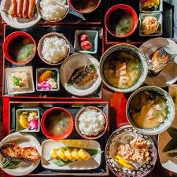

Traditional Udon Noodle Soup

Udon noodles are thick, chewy, and deeply satisfying. This dish is beloved for its gentle broth and comforting simplicity, making it a staple in Japanese home cooking.
Whether enjoyed on a cold winter day or as a light everyday meal, udon soup delivers warmth, nourishment, and timeless flavor in every bowl.
The Beauty of Udon Noodles
Made from wheat flour, water, and salt, udon noodles are known for their soft yet chewy texture. Their thickness allows them to absorb broth while maintaining a satisfying bite.
Fresh or dried varieties can be used, each offering a slightly different texture and cooking time.
A Light & Flavorful Broth
Traditional udon broth is made from dashi stock, soy sauce, and mirin. The flavor is gentle, allowing the noodles to remain the star of the dish.
This delicate balance creates a soothing and easy-to-enjoy soup base.
Classic Udon Toppings
Udon is highly customizable. Popular toppings include sliced green onions, tempura shrimp, tofu, fish cakes, and soft-boiled eggs.
These additions enhance both texture and visual appeal.
Regional Variations
Different regions of Japan offer unique udon styles. Kansai udon features a lighter broth, while Kanto versions are darker and richer in soy flavor.
Each variation reflects local taste preferences and traditions.
Serving & Pairing Ideas
- Tempura shrimp on top
- Inari sushi on the side
- Pickled vegetables
- Steamed rice bowls
- Hot green tea
Tips for Perfect Udon
Cook noodles just until tender to avoid over-softness. Rinse lightly to remove excess starch before adding to broth.
Always serve hot to enjoy udon at its most comforting state.
Comfort in Every Slurp
Traditional udon noodle soup embodies the heart of Japanese comfort food—simple ingredients prepared with care and balance.
Warm, nourishing, and endlessly adaptable, udon remains a timeless favorite that brings calm and satisfaction to every table.